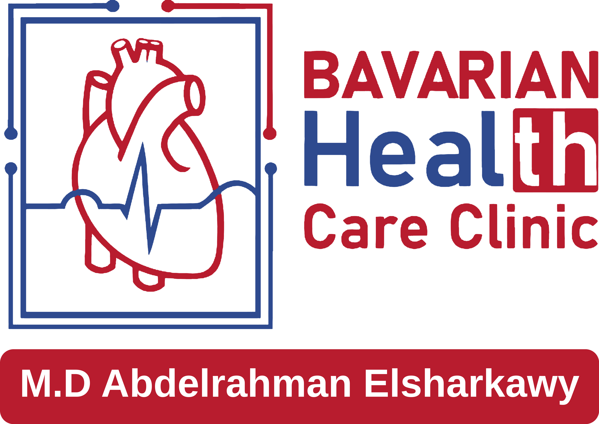

الخبير الألماني والمحاضر في أمراض القلب والأوعية الدموية، استشاري أول أمراض القلب والأوعية الدموية وقسطرة القلب والمنظمات، وزميل واستشاري القلب بـ Deutsches Herzzentrum München.
المركز الطبي CITY CARE - كومباوند جاردينيا سيتي – مدينة نصر – طريق السويس
هاتف: 01107221974 / 01107221964
إيميل: gardinia@bavarianhcc.de
مركز أمراض القلب وطب القلب الرياضي – نطاق München (ولاية بافاريا)
هاتف: +49 8443 5783999 | فاكس: +49 8443 5783990
الموقع: www.bavarianhcc.de | www.kardiologie-lkpfaffenhofen.de